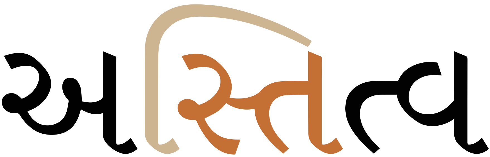
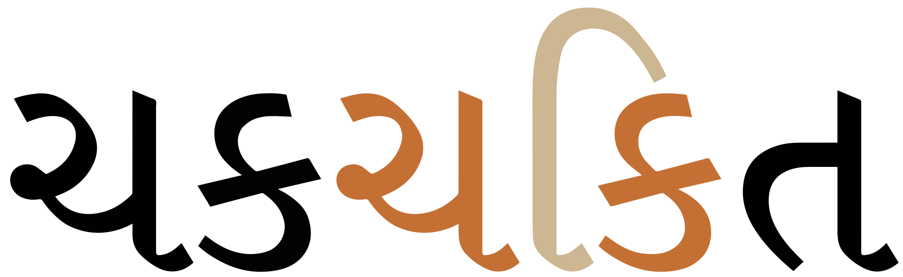

This page brings together basic information about the Gujarati script and its use for the Gujarati language. It aims to provide a brief, descriptive summary of the modern, printed orthography and typographic features, and to advise how to write Gujarati using Unicode.
Select part of this sample text to show a list of characters, with links to more details.
Change size: 28px
અનુચ્છેદ ૧:
પ્રતિષ્ઠા અને અધિકારોની દૃષ્ટિએ સર્વ માનવો જન્મથી સ્વતંત્ર અને સમાન હોય છે. તેમનામાં વિચારશક્તિ અને અંતઃકરણ હોય છે અને તેમણે પરસ્પર બંધુત્વની ભાવનાથી વર્તવું જોઇએ.
અનુચ્છેદ ૨:
દરેક વ્યક્તિને જાતિ, રંગ, લિંગ, ભાષા, ધર્મે, રાજકીય અથવા બીજા અભિપ્રાય, રાષ્ટ્રીય અથવા સામાજિક ઉદ્ભવસ્થાન, મિલકત, જન્મ અથવા મોભા જેવા કોઇપણ જાતના ભેદભાવ વગર આ ધોષણામાં રજૂ કરવામાં આવેલા સધળા અધિકારો અને સ્વતંત્રતા ભોગવવાનો હક્ક છે.
વધુમાં કોઇપણ વ્યક્તિ તે સ્વતંત્ર, ટ્રસ્ટ હેઠળના સ્વશાસન હેઠળ ન હોય તેવા અથવા સાર્વભામત્વની બીજી કોઇપણ મર્યાદા હેઠળ આવેલા દેશ અથવા પ્રદેશની હોય તો પણ રાજકીય, હફમવવિષયક અથવા આંતરરાષ્ટ્રીય મોભાના ધોરણે તેની સાથે કોઇપણ ભેદભાવ રાખવામાં આવશે નહિ.
The Gujarati script ( ગુજરાતી લિપિgujǎrātī lipi ) is used for writing the Gujarati and Chodri languages, together spoken by almost 47 million people, as well as use alongside Devanagari for languages of the Bhil people, one of India's largest indigenous groups. Until the mid-19th century it was used primarily for bookkeeping and personal correspondence, but since printing facilities became widely available to Gujarati speakers the script has been used in schools, for printing books and newspapers, in government offices and public signage, and is one of the official scripts of India.
The Gujarati script was adapted from the Devanagari script to write the Gujarati language from the 10th century. Since then it has gone through 3 distinct phases. The third phase, begun in the 17th century, saw the abandonment of the shiroreka (topline), part of an adaptation to enable ease and speed of writing. The Devanagari script was used for literature and academic writings until the modern widespread use of the script developed.
There are separate vowel signs for the historical short and long variants, but length is no longer distinctive in modern pronunciation. It is only found in metrical structures of verse.ws,#Overview
Vowels may be nasalised, using the anusvara diacritic.
Standalone vowel sounds are written using 12 independent vowel letters, one for each vowel sound, including the inherent vowel. Some vowel signs can be visually analysed into subcomponents, but Unicode usage involves only one combining character per consonant.
This orthography has vocalics, however of the four vocalic letters in the script (plus their 4 vowel signs) only 1 is in use for contemporary text.
Vowel absenceVowel absence is commonly not marked. The inherent vowel is generally not pronounced at the end of a word, but also it is sometimes elided without indications within a word. But it may also be indicated using conjunct forms or a visible combining mark for codas. In addition, participating consonants may just be moved together. There are no dedicated medial consonant characters.
0ACD is used to kill the inherent vowel and to form conjuncts. Usually it is invisible.
Conjunct forms occur as half-forms, stacked consonants, and ligated glyphs. Half-forms typically remove the vertical stroke from the basic glyph. Gujarati is also unusual in that components in clusters sometimes used Devanagari glyphs for one or more Gujarati characters.
Syllable codas are written using ordinary consonant letters. Codas can also be written using 2 dedicated combining marks (anusvara & visarga).
ə following a consonant is not written, but is seen as an inherent part of the consonant letter, so kə is written by simply using the consonant letter. The sound is transcribed as a. Example:
ફજર
ફ,જ,ર
Since Gujarati consonants normally include an inherent vowel, the orthography has ways to indicate a consonant that is not followed by a vowel sound. See novowel.
Post-consonant vowels
Vowels that follow a consonant are written using 11 vowel signs, all combining marks, and only one per consonant.
Gujarati has one pre-base vowel, but there are no multipart vowels nor circumgraphs.
Six vowel signs are are spacing marks, meaning that they consume horizontal space when added to a base consonant.
All vowel signs are typed and stored after the base consonant, whether or not they precede it when displayed. The glyph rendering system takes care of the positioning at display time. Conjuncts are treated as indivisible units when it comes to rendering vowel signs, meaning that pre-base vowel signs are rendered before the conjunct as a whole (see prebase).
Plain vowels
કી
ki
Gujarati uses the following dedicated combining marks for plain vowels.
િ,ી,ુ,ૂ,ે,ો,ૉ,ૅ,ા
ૅ and ૉ are used to represent the English æ and ɔ sounds, respectively.ws,#Vowels
Diphthongs
કૈ
kəj
Gujarati also uses single vowel signs for 2 diphthongs. These are also dedicated combining marks for vowels.
ૈ,ૌ
Pre-base vowel sign
કિ
ki
One vowel sign appears to the left of the base consonant letter or cluster.
િ
This is a combining mark that is always typed and stored after the base consonant(s), ie. the codepoints follow the order in which the items are pronounced. The rendering process places the glyph before the base consonant without changing the code points. See the sequence of characters in storage shown for the following word.
દિવસ
દ,િ,વ,સ
It is placed before the start of a conjunct, regardless of the number of consonants in that conjunct. In fig_prebase the sequence of glyphs for the orthographic syllable is rendered VCC, whereas the pronunciation is CCV.

A prebase vowel, pronounced after a consonant cluster, but rendered to the left of the conjunct.show composition
અસ્તિત્વ
However, if the cluster doesn't form a conjunct, this creates two syllables and the pre-base vowel sign appears before the last consonant in the cluster. The sequence of displayed glyphs is now CVC. If the conjunct contains 3 consonants, the displayed order will be CCVC.

Another pre-base vowel, but without the conjunct. The vowel is now rendered to the left of the last consonant in the cluster.show composition
ચકચકિત
Vowel length
There are separate vowel signs for the historical short and long variants, but length is no longer distinctive in modern pronunciation. It is only found in metrical structures of verse.ws,#Overview
Nasalisation
ં nasalises the vowel in a syllable, eg.
આંખ
એકલું
The anusvara may also represent a nasal before a plosive, eg.
અંદર
ઈંડું
Vowel sign placement
The following list shows where vowel signs are positioned around a base consonant to produce vowels, and how many instances of that pattern there are.
1 pre-base, eg. કિki
5 post-base, eg. કાkə
3 superscript, eg. કેke
2 subscript, eg. કુku
Standalone vowels
Gujarati represents standalone vowels using a set of independent vowel letters. The set includes a character to represent the inherent vowel sound.
ઇ,ઈ,ઊ,ઉ,એ,ઓ,અ,ઑ,ઍ,આ, ,ઔ,ઐ
Vowel sounds to characters
This section maps Gujarati vowel sounds to common graphemes in the Gujarati orthography.
Sounds listed as 'infrequent' are allophones, or sounds used for foreign words, etc. Light coloured characters occur infrequently.
Plain vowels
i
dependentી
standaloneઈ
ɪ
dependentિ
standaloneઇ
u
dependentુ
standaloneઉ
dependentૂ
standaloneઊ
e
dependentે
standaloneએ
o
dependentો
standaloneઓ
ə
inherent voweleg. ચંદ્ર
standaloneઅ
ɛ
dependentે
standaloneએ
ɔ
dependentૉ
standaloneઑ
dependentો
standaloneઓ
æ
dependentૅ
standaloneઍ
ɑ
dependentા
standaloneઆ
Complex vowels
əj
dependentૈ
standaloneઐ
əʋ
dependentૌ
standaloneઔ
Nasalisation
◌̃
nasalisationં
Vocalics
ૃ,ઋ
In Gujarati, vocalics are available both as vowel signs and independent vowels. The examples below show both the vowel sign and the independent vowel for ɾʊ.
નૃત્ય
ઋતુ
This appears to be the only vocalic that is regularly used for the modern Gujarati language.
The other vocalics in the Gujarati block are:
ૄ,ૠ,ૢ,ઌ,ૣ,ૡ
CLDR indicates that ૄ/ૠ may also be used in modern Gujurati, but if so it appears to be rare, and doesn't occur in any of the 3,600 terms in the term list.
Vowel absence
Vowel absence principally occurs either when a consonant is a syllable coda, or when a consonant is part of a consonant cluster.
Given that consonants normally include an inherent vowel, the orthography needs a way to indicate when a consonant is not followed by a vowel.
Follow these links for more information.
Conjuncts. There are a number of possibilities here:
Half-forms : Reduce the shape of all consonants in the cluster except the last to a 'half-form'.
Stacking : Reduce a non-initial consonant in size and shape and position it below the first. Sometimes the subjoined character is attached to the bottom left corner.
Touching : Move the component consonants close together, so that they touch.
Special ligation : Create a ligature combining the two shapes (where it may be difficult to identify one or more of the parts).
The letter ra has its own idiosyncratic way of combining with other consonants, whether it precedes or follows them.
Show a visible virama below the non-final consonants in the cluster.
Coda diacritics Some Gujarati codas can be written using combining marks. (Note that onset medials are written using conjuncts.).
Unmarked vowel absence, for which there are usually generalised pronunciation rules that allow readers to spot these locations.
To produce a conjunct, ્ is added between the consonants in the cluster. There are exceptions, but this type of virama is usually not displayed but causes the glyphs of the consonants in the cluster to merge, eg. see the sequence below:
શ,્,ચ,શ્ચ
The font usually determines which visual method is used, although it is possible to influence this (see joiner).
One slightly unusual aspect of Gujarati is that it sometimes borrows Devanagari glyph shapes for one or more components of a conjunct (though the characters are still the normal Gujarati ones).
Click on the figures below to see which characters are being shown.
Half-forms
A half-form is typically created by removing the vertical line in the consonant shape, where there is one. (The vertical line is associated with the inherent vowel, and around two-thirds of Gujarati consonant shapes contain one.) There is often some additional tweaking of glyphs in order to join the components neatly.
ત,્,વ,ત્વ
ણ,્,ઢ,ણ્ઢ
થ,્,થ,થ્થ
Examples of conjuncts formed by using half-forms.
Vertical combinations
Vertical combinations are particularly common for gemination.
ટ,્,ટ,ટ્ટ
ઢ,્,ઢ,ઢ્ઢ
ટ,્,ઠ,ટ્ઠ
Examples of conjuncts formed by subjoining non-initial consonants.
Some vertical combinations hang the subjoined second consonant from the bottom-left corner.
દ,્,ગ,દ્ઘ
દ,્,ધ,દ્ધ
દ,્,બ,દ્બ
Examples where subjoined consonants are attached to the bottom-left corner.
Using devanagari glyph shapes
Certain clusters may use devanagari shapes for one or more of the consonants participating in the conjunct. This depends on the font: for example, Noto Sans Gujarati uses Devanagari shapes, but Noto Serif Gujarati doesn't. Noto Sans Gujarati is in the table below.
દ,્,બ,દ્બ,ब
ઞ,્,જ,ઞ્જ,ज
ઙ,્,ક,ઙ્ક,क
હ,્,ય,હ્ય,ह
Examples where part(s) of the conjunct use a Devanagari shape.
This is a reminder that conjuncts are to a large extent a legacy of Sanskrit text.
Ligated conjuncts
Other clusters combine components into special ligated forms, often in a way that makes it difficult to spot the component parts.
ત,્,ત,ત્ત
દ,્,પ,દ્ય
શ,્,ચ,શ્ચ
ક,્,ષ,ક્ષ
Conjuncts formed by ligation.
Touching consonants in conjuncts
Other clusters, particularly where there is no vertical stroke in the preceding consonant, move the components closer together, without major shape changes, so that they touch.
ક,્,ક,ક્ક
ક,્,ય,ક્ય
જ,્,જ,જ્જ
Consonants in a cluster that touch each other without substantial shape changes.
Conjuncts with RA
When RA occurs in a cluster, either as a medial consonant or a coda followed by another consonant, there are special rules for rendering. See medial_ra and coda_ra for details.
Visible virama
The ability to form conjuncts depends on the richness of the font. Where a font is not able to produce a half-form or ligature, etc., it will leave a visible virama glyph below the initial consonant(s) to indicate the missing vowel sound, eg. ટ્બʈ͓b
Unmarked vowel absence
The inherent vowel is not always pronounced, even if there is no visual indication of its absence.
For example, the inherent vowel is typically not pronounced at the end of a word, eg.
ઘર
When the root word is followed by suffixes or in compounds the inherent vowel is not pronounced either, even though no conjuncts are formed,ws,#Overview eg.
ઘરપર
ઘરકામ
The inherent vowel may be pronounced, however, after a word-final consonant cluster, such as in the following words.
ચંદ્ર
નૃત્ય
The inherent vowel may also be elided when combining morphemes. For example, the root of the word ‘hold’ loses ə in its final syllable through the process of ə-deletion when inflected, but the spelling doesn't change. Compare:ws,#Overview
પકડ
પકડે
In other cases, the inherent vowel is simply missingws,#Overview, eg.
વરસાદ
ચમચી
Gujarati can also use ્ (called halant in Gujarati) to explicitly kill the inherent vowel after a consonant. It is rarely seen because it is usually hidden when part of a conjunct (see clusters).
The virama is visible, however, if it isn't followed by another consonant, eg. the following explicitly represents just the consonant sound.
ક્ k
Consonants
Consonant summary table
This table summarises only basic consonant to character assignments. Click on the phonetic transcriptions for more detail
A number of letters have allophones which are not shown here. See the following sections for details. Normal letters are used as final consonants, but we list here some additional, dedicated finals.
The Unicode Gujarati block provides mechanisms for extending the basic set of consonants, in particular for the transcription of Arabic and Avestan.
Arabic extensions
A set of combining characters for the range 0AFA..0AFF was added to the block in Unicode v10 to allow representation of Arabic sounds by Ismaili Khoja communities. For more details, see the Unicode Standard.u,#G724935
ૺ,ૻ,ૼ,૽,૾,૿
The first 3 diacritics are used as in Arabic. The 3 to the right are combined with consonants to represent non-Gujarati sounds.
Avestan extensions
઼ is used to transliterate sounds in Avestan found in the texts of the Zoroastrians, who fled to Gujarat from Persia and are known as Parsis. They include the following;
ત઼,ંઘ઼,જ઼,ખ઼
The Gujarati block also has an additional consonant character to represent the letter ʒ in those transliterations.
Clusters of consonant letters at the beginning of an orthographic syllable occur in Gujarati, and they are generally handled as described in the section clusters.
The medial RA is rendered idiosyncratically.
Medial RA
When ra follows another consonant, it is typically rendered as a small, diagonal line pointing downwards to the left, eg.
ક્ર,ગ્ર,ભ્ર,હ્ર,શ્ર
After ત, however, it produces:
ત્ર
After 5 other consonants, it is rendered as an upside-down v shape below, ie.
દ્ર,ટ્ર,ઠ્ર,ડ્ર,ઢ્ર
Codas
Syllable codas are typically represented by ordinary consonant letters. They may or may not form conjuncts with the onset of a following syllable. For example:
આશ્રમ
ગોકળગાય
Consonant clusters involving an r coda have special joining forms. Gujurati also has 2 dedicated diacritics.
RA coda
When RA precedes a consonant followed by an inherent vowel, it is rendered as a small hook above that consonant, typically above the rightmost vertical line. Where it precedes a cluster of 2 more consonants, it is aligned with the vertical line of the trailing consonant. Examples:
ર્ક,ર્સ,ર્સ્પ
However, if there is a spacing vowel sign with a vertical line to the right of the cluster, it aligns with that, eg.
ર્કા,ર્કી,ર્વા
Coda diacritics
Two combining characters can follow a consonant or vowel to produce a final consonant sound in a phonetic syllable.
ં,ઃ
ં nasalises the vowel in a syllable (see nasalisation), or represents a homorganic nasal before a plosive.
ઃ is a rarely used and is usually a silent hangover from Sanskrit, representing a final h.
Consonant sounds to characters
This section maps Gujarati consonant sounds to common graphemes in the Gujarati orthography.
p
consonantપ
b
consonantબ
bʰ
consonantભ
t
consonantત
tʰ
consonantથ
t͡ʃ
consonantચ
t͡ʃʰ
consonantછ
d
consonantદ
dʰ
consonantધ
d͡ʒ
consonantજ
d͡ʒʰ
consonantઝ
ʈ
consonantટ
ʈʰ
consonantઠ
ɖ
consonantડ
ɖʰ
consonantઢ
k
consonantક
kʰ
consonantખ
kʃ
consonantક્ષ
ɡ
consonantગ
ɡʰ
consonantઘ
ɡj
consonantજ્ઞ
f
consonantફ
s
consonantસ
ʃ
consonantશ
consonantષ
ɦ
consonantહ
visargaઃLight coda.
m
consonantમ
n
consonantન
ɲ
consonantઞ
ɳ
consonantણ
ŋ
consonantઙ
w
consonantવ
ʋ
consonantવ
r
consonantર
rʊ
dependent vocalicૃ
independent vocalicઋ
l
consonantલ
ɭ
consonantળ
j
consonantય
Consonant length
Gemination and consonant lengthening are handled using the normal approach to consonant clusters (see clusters).
Other features
Other letters
In addition to the consonants and vowel letters already mentioned, the Gujarati block contains the following letters, which CLDR lists as needed for writing the Gujarati language.
ઽ,ૐ
ઽ is used to indicate elision when writing Sanskrit.
ૐ is used for religious texts.
Encoding choices
Visually, several of the standalone vowels and some vowel signs look as it they could be composed of smaller parts. This section compares approaches and considers the relevance of Unicode Normalisation Form D (NFD) and Unicode Normalisation Form C (NFC) to give guidance on which approach is best.
The approaches listed here are not equivalent when the text is normalised, and therefore produce different content which creates problems for search or other operations. In all cases, only the atomic character in the left column should be used.
Use
Do not use
ો
0ABE 0AC7
ૉ
0ABE 0AC5
ૌ
0ABE 0AC8
Independent vowels
The approaches listed here are also not equivalent when the text is normalised, and therefore only the atomic character in the left column should be used.
Use
Do not use
આ
0A85 0ABE
એ
0A85 0AC7
ઓ
0A85 0ACB
ઍ
0A85 0AC5
ઑ
0A85 0AC9
ઐ
0A85 0AC8
ઔ
0A85 0ACC
Currency
The approaches listed here are also not equivalent when the text is normalised, and therefore only the atomic character in the left column should be used.
Use
Do not use
૱
0AB0 0AC2 0AF0
Numbers
Digits
Gujarati has a set of native digits, used in the same way as Latin digits.
૦,૧,૨,૩,૪,૫,૬,૭,૮,૯
Currency
The abbreviation for રૂપિયો 'Rupee' can be written using the dedicated character, ૱ or using the initial syllable followed by an abbreviation mark or a full stop, ie. રૂ૰રૂ.
Text direction
Gujarati text runs left to right in horizontal lines.
200D can be used to produce a half-form, such as સ્ચrather than શ્ચ It can also be used to produce standalone half-forms (for educational text) such as સ્
Typographic units
Word boundaries
Words are separated by spaces.
Graphemes
Grapheme clusters
tbd
Punctuation & inline features
Phrase & section boundaries
Gujarati generally uses ASCII punctuation, but may also use a couple of punctuation from the Devanagari block.
phrase
,
;
:
sentence
.
?
!
।
section
॥ (infrequent)
Gujarati uses standard western punctuation, but may also use the Devanagari version of a full stop, ।.
Infrequently, ॥ is used for boundaries of text above the sentence level.
Bracketed text
Gujarati commonly uses ASCII parentheses to insert parenthetical information into text.
start
end
standard
(
)
Quotations & citations
Gujarati texts typically use quotation marks. Of course, due to keyboard design, quotations may also be surrounded by ASCII double and single quote marks.
start
end
initial
“
”
nested
‘
’
Single quotation marks are used for quotations within quotations.
Abbreviation, ellipsis & repetition
૰ is a commonly-used character in Gujarati and appears in printed materials. It is used to write abbreviations of words in Gujarati, eg. ડોક્ટર can be abbreviated as ડો૰ The Latin full stop is used interchangeably with this character, eg. ડો.
Other inline features
Other punctuation
CLDR also lists the following non-ASCII characters.
‐,–,—,…
Line & paragraph layout
Line breaking & hyphenation
By default, Gujarati breaks lines on the spaces between words.
Gujarati uses the so-called 'alphabetic' baseline, which is the same as for Latin and many other scripts.
Counters, lists, etc.
You can experiment with counter styles using the Counter styles converter. Patterns for using these styles in CSS can be found in Ready-made Counter Styles, and we use the names of those patterns here to refer to the various styles.
The modern Gujarati orthography uses a native numeric style.
Numeric
The gujarati numeric style is decimal-based and uses these digits.rmcs
૧,૨,૩,૪,૫,૬,૭,૮,૯,૦
eg.
૧,૨,૩,૪,૧૧,૨૨,૩૩,૪૪,૧૧૧,૨૨૨,૩૩૩,૪૪૪
Prefixes and suffixes
Gujarati commonly uses a full stop + space as a suffix.
Examples:
૧. ૨. ૩. ૪. ૫.
Separator for Gujarati list counters: full stop + space.